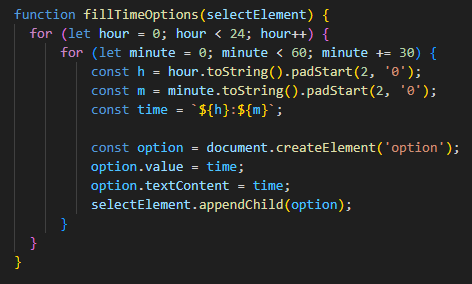
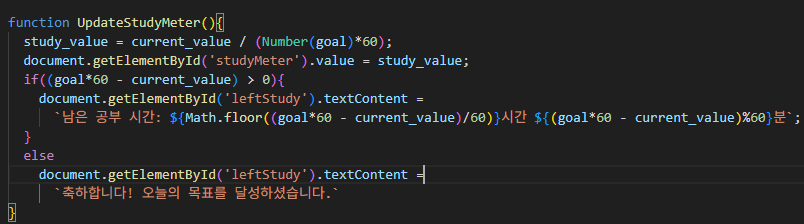

1. select태그와 반복문
select 태그와 for 반복문을 사용해서 00:00부터 23:30까지
30분 단위의 시간을 자동으로 옵션에 추가해,
사용자가 시작 시간과 종료 시간을 드롭다운에서 쉽게 선택할 수 있도록 만들었습니다.
한자리수의 시간은 앞에 0을 붙여주기 위해 toString()을 이용해 문자열로 바꿔주고
padStart(문자열길이, 채울문자)를 통해 두자리 숫자 형태로 만들었습니다.

2. meter 태그
meter 태그를 이용해 목표 달성률을 시각적으로 표현했습니다.

3. 자바스크립트와 html 연결
그냥 스크립트를 넣으면 js가 먼저 실행되고 나서
html이 실행되기 때문에 getElemetById() 같은 코드에서 적용할 id를 찾지 못해
에러가 납니다.
그러므로 html을 먼저 실행시키고 js를 실행시켜야 정상적으로 돌아갑니다.
script src="study_3.js" defer
defer을 쓰게 되면 html이 모두 로드된 후에 스크립트를 실행시킵니다.